Takehara, Hiroshima: things to do, food and stays
Takehara · Hiroshima
Takehara
Highlighted on the Hiroshima map.
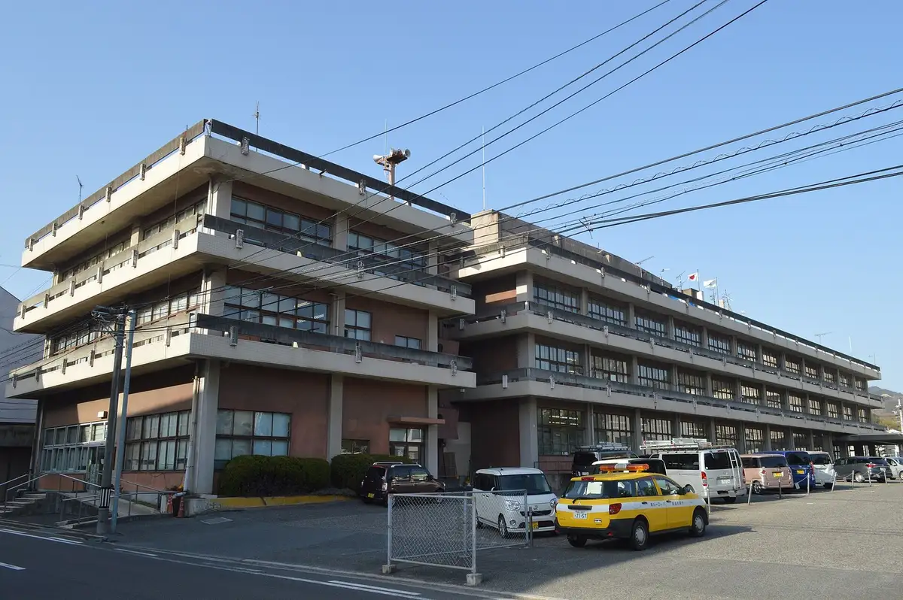
Stay
NIPPONIA HOTEL 竹原 製塩町
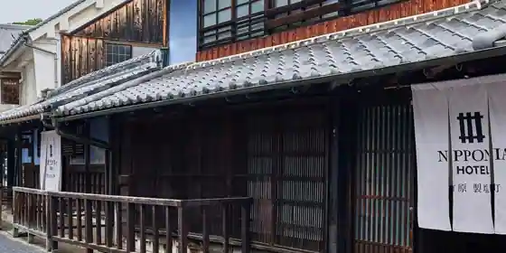
NIPPONIA HOTEL Takehara Seien Machi
瀬戸内リゾートヴィラ
Setochi Resort Villa
Resort hotel in Kichimei, Takehara with scenic views.
湯坂温泉郷 賀茂川荘
Yu Saka Onsen Sato Kamogawa So
Inn at Yusaka Onsen in Nishino, Takehara.
グリーンスカイホテル竹原
Gurinsukai Hotel Takehara
ＮＩＰＰＯＮＩＡ ＨＯＴＥＬ 竹原 製塩町
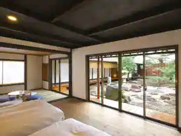
NIPPONIA HOTEL Takehara Seien Machi
TAKENOWA風
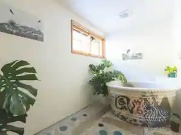
TAKENOWA Kaze
Inn in Hon, Takehara with one group per day and a renovated traditional house.
川端旅館 ｂｙ Ｔａｂｉｓｔ
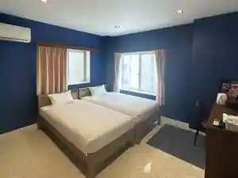
Kawabata Ryokan by Tabist
Ryokan inn in Tadanominagahama, Takehara with scenic views; 5-minute walk from Kireininarimashita!Moyori Station.
R185
R185
湯坂温泉 自家源泉の宿 賀茂川荘
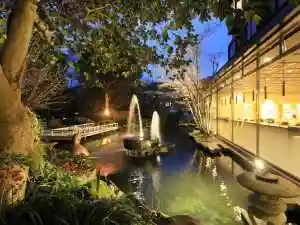
Yu Saka Onsen Jika Gensen No Yado Kamogawa So
Inn at Yusaka Onsen in Nishino, Takehara.
Ｔａｂｉｓｔ 瀬戸内の宿 竹原シーサイド
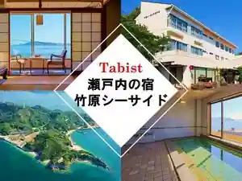
Tabist Setochi No Yado Takehara Shisaido
Inn in Tadanominagahama, Takehara with scenic views.
田万里家FARM STAY
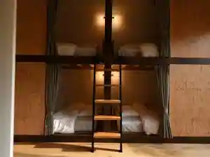
Tama Rike FARM STAY
Inn in Tamasato, Takehara with a sauna and family-friendly stays.
休暇村大久野島
Kyukamura Okuno Shima
Inn in Tadanomi, Takehara with local seafood dinners.
Dining
太華園
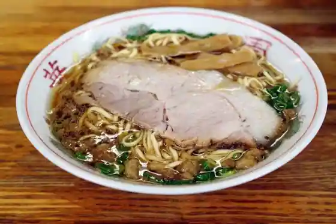
Taika Sono
ルアン NIPPONIA HOTEL 竹原 製塩町

Ruan NIPPONIA HOTEL Takehara Seien Machi
ほり川
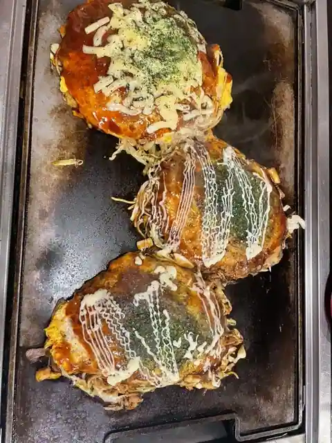
Hori Kawa
御幸
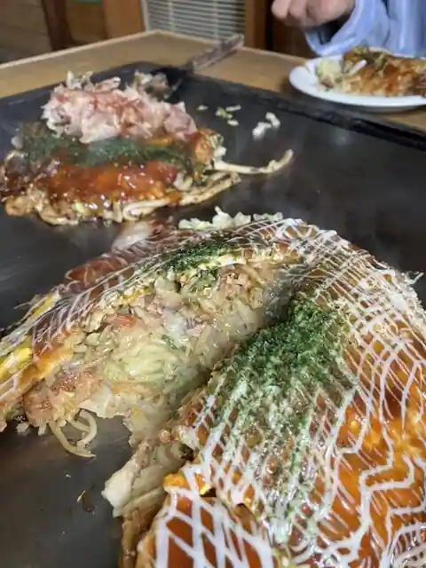
Miyuki
誠家
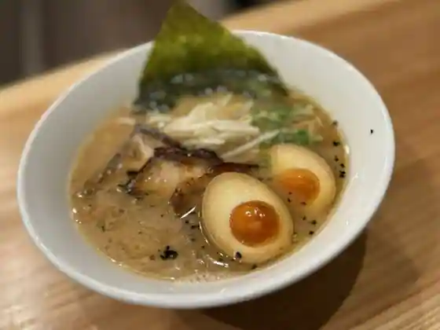
Makoto Ie
うさんちゅカフェ
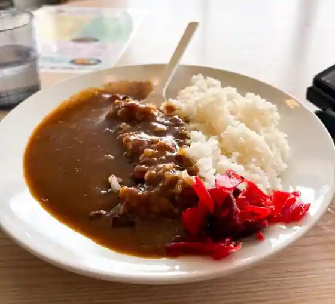
Usanchu Cafe
松屋二重焼本舗
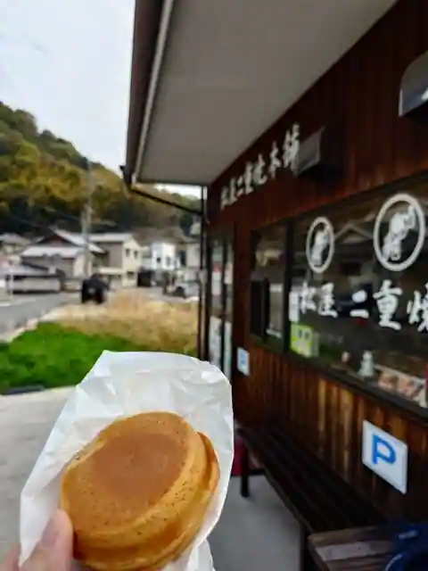
Matsuya Niju Yaki Honpo
瀬戸内ゴルフリゾート レストラン THE GRILL
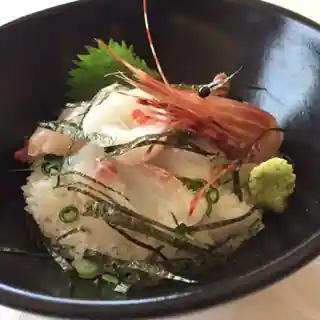
Setochi Gorufu Resort Restaurant THE GRILL
ココリコ
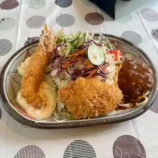
Kokoriko
神田もち店
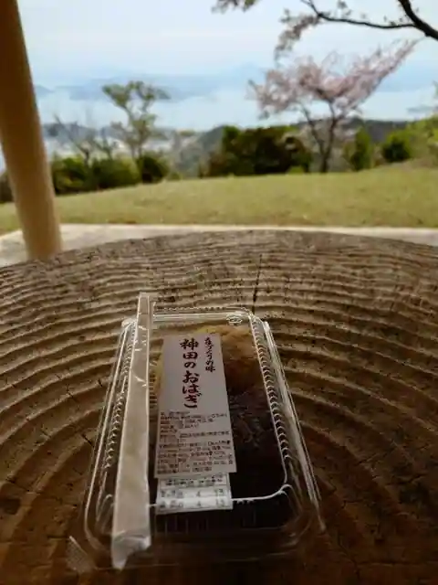
Kanda Mochi
将軍
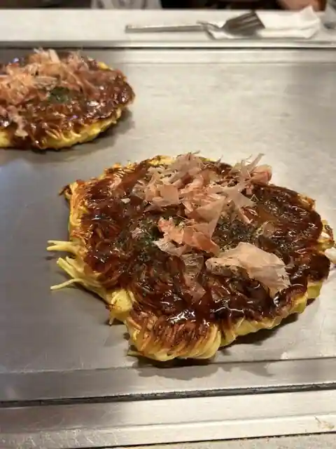
Shogun
道の駅 たけはら
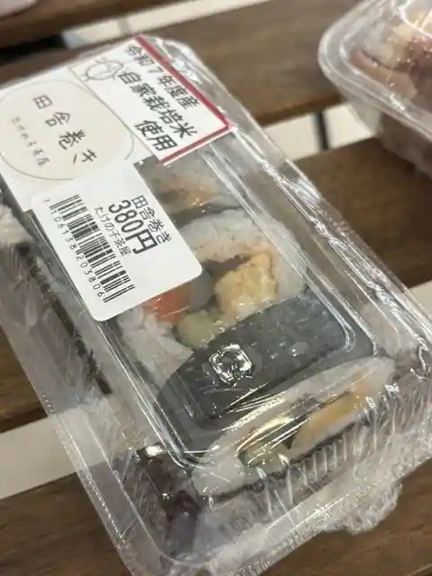
Michi No Eki Takehara
遊山
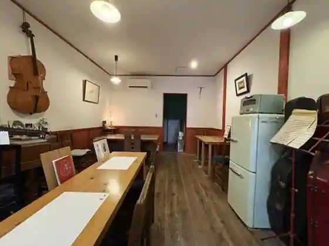
Yuzan
トラットリア エム
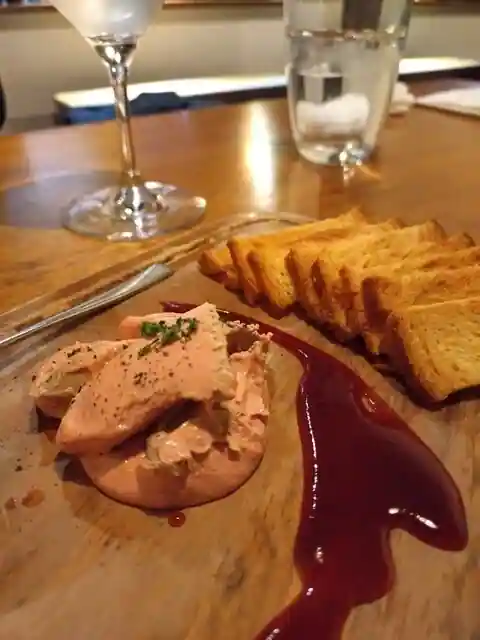
Trattoria Emu
瀬戸内ダイニング ハーベスト
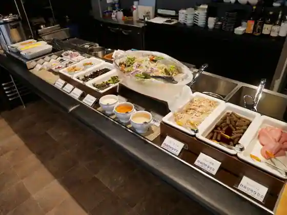
Setochi Dining Habesuto
カフェ ホクストン
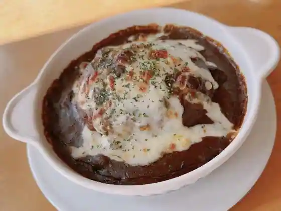
Cafe Hokusuton
カフェ青
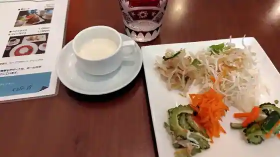
Cafe Ao
田万里家 RICE DONUT
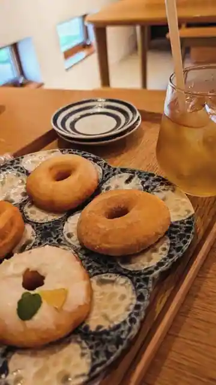
Tama Rike RICE DONUT
うどん屋 かあちゃん
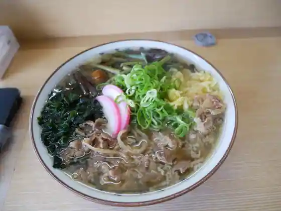
Udon Ya Kachan
道の駅たけはらレストラン
Michi No Eki Takehara Restaurant
忠海港
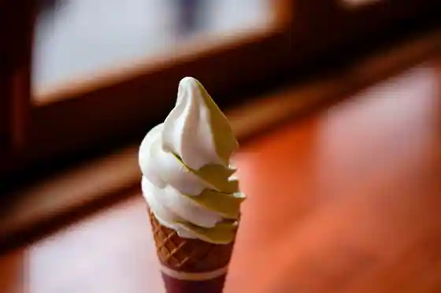
Tadanomi Minato
湯坂温泉郷 ホテル賀茂川荘
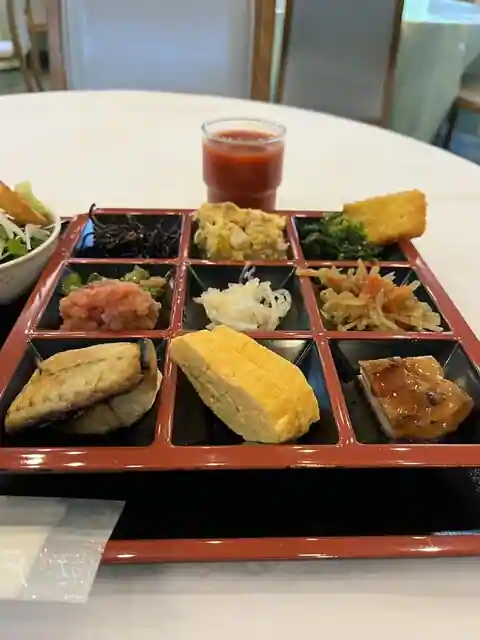
Yu Saka Onsen Sato Hotel Kamogawa So
全国純米酒の店 伏見小料理店
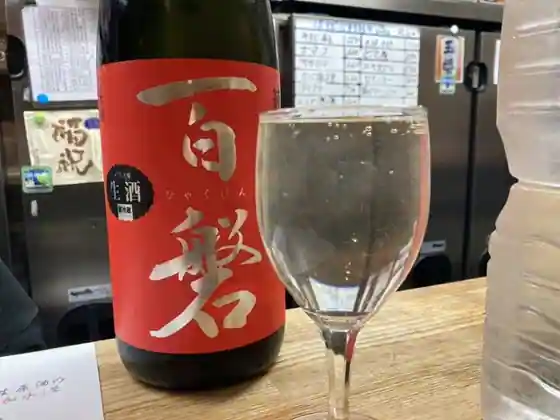
Zenkoku Junmaishu No Fushimi Koryori
村上ベーカリー
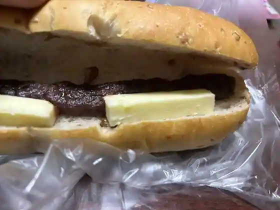
Murakami Bakery
Sights
Takehara Streetscape Hozon Chiku
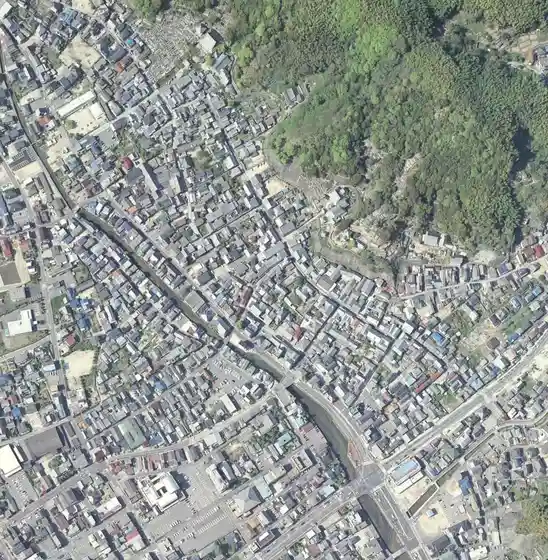
Seiho Tera Fumyo Kaku
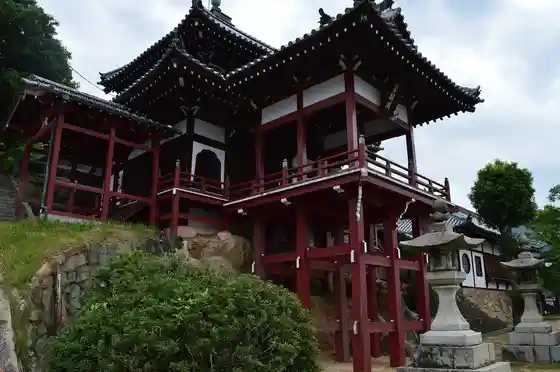
Matsusaka Tei
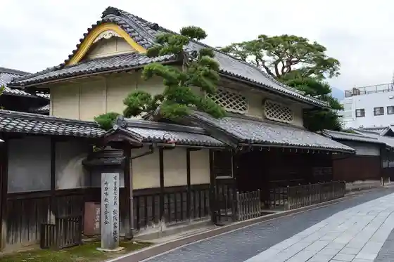
Okuno Shima
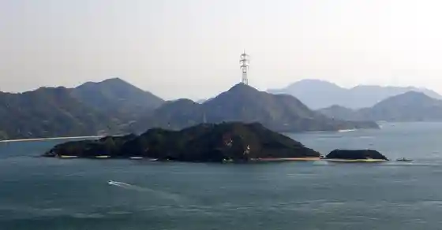
Tadanomi Minato